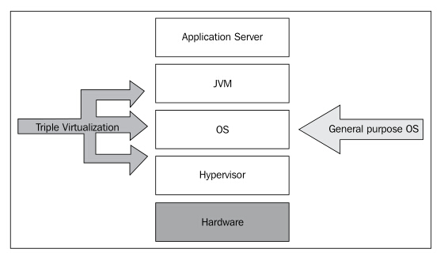
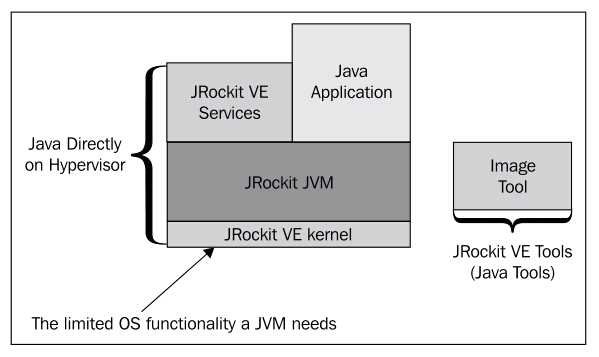
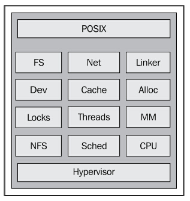

13.2 Java虚拟化
接下来讨论一下在生产环境中通过虚拟环境运行Java应用程序的事情。下面的示意图展示展示了从应用程序服务器到物理硬件之间的所有结构。在Java应用程序和物理硬件之间，包含了JVM，操作系统（例如Oracle Enterprise Linux）和虚拟机管理程序（如Oracle VM）。

像Oracle WebLogic这样的应用服务器就是通过JVM来与你行的。JVM为运行在其上的Java应用程序提供了针对各类操作系统的抽象，屏蔽操作系统之间的差异，实现"一次编写，到处运行"。
位于在JVM之下的是底层操作系统，JVM需要与之一一适配，例如，在类Unix系统上，内存的分与机制与Windows系统颇为不同，系统调用也有所区别（mmap vs. VirtualAlloc）。为了实现"一次编写到处运行"，JVM需要应用具体的操作系统模块来操作内存，因而，操作系统就充当了JVM和机器之间的抽象层。
因此，通用操作系统的作用就是对硬件进行抽象，以便简化应用程序与硬件的交互。让应用程序的开发人员通过原子汇编指令自行实现针对特定芯片的同步机制或线程实现，是不现实的，而操作系统就是为完成这些任务而生的，是JVM下的第2层抽象。
最后，在虚拟世界中，虚拟机管理程序形成了第3层抽象，各个客户应用程序均通过虚拟机管理程序来访问物理硬件。
抽象层之间的交互也会带来一些性能损耗，高层抽象与低层抽象进行交互时往往会涉及到一些特权操作，例如获取时间、清除缓存，以及抢占任务等。
如果虚拟操作系统的唯一任务是运行JVM的话，而JVM的唯一任务就是运行Java应用程序的话，那为啥还要弄出来这么多层呢，不是很浪费吗？只为运行一个Java应用程序需要这么麻烦么？事实上，Java应用程序（假设是纯Java代码编写的应用程序）并不知道它运行在什么系统上，也不关心这些。如果Java应用程序不涉及到GUI，还需要在显示功能么？如果所有的访问控制都由应用程序内部处理，那还需要操作系统么？
JVM需要提供JDK库函数以支持线程和同步，实现内存管理，以及其他林林总总的任务。因此，不太严谨的说，JVM就是一个专用的虚拟操作系统。
或许让JVM直接跑在虚拟机管理程序上是个不错的主意。
13.2.1 JRockit Virtual Edition
如果能在保留Java虚拟化优势的情况下，去除虚拟化的开销，那肯定是好处多多。如果Java和硬件之间的抽象层能足够小，则不仅可以提升性能，还能简化系统，增强安全性。对此，JRockit架构提出的解决方案是JRockit VE（JRockit Virtual Edition）。
在2005年的时候，俺们写了个链接器来查找丢失了哪些JVM所生成的符号，结果发现，没少几个，而这就成了JRockit VE项目的雏形。
JRockit VE包含JRockit JRE，纯Java服务（例如SSH守护进程），以及一个迷你操作系统（即所谓的JRockit VE内核），通过该迷你操作系统，使JVM看来像是运行在虚拟机管理程序顶层一样，并为JVM提供所需的操作系统功能（当然，只提供了很有限的一部分功能）。
目前，JRockit VE还只支持x86平台。
目前，JRockit VE的商业版只能运行在Oracle VM的虚拟机管理程序上（也就是运行在Xen上），将来或许会支持其他虚拟机管理程序。
JRockit VE的设计哲学是，JRockit VE内核的运行平台是硬件，而不是虚拟机管理程序。因此，JRockit VE内核中包含了一个小型的E1000网卡驱动，可以在任何x86平台上，通过USB启动JRockit VE来运行Java应用程序。这个例子确实很酷，或许不太能说明JRockit VE对云计算的贡献，不过俺们会继续努力的。
JRockit VE中还提供了相关工具（即Image Tool）来创建/操作用于运行在虚拟环境中的Java应用程序。当虚拟化一个JRockit VE中的Java应用程序时，实际上指的是操作一个 虚拟机镜像。

上图展示了部署在JRockit VE上的Java应用程序的软件栈。部署时，像SSH这类的服务是在Java层运行的。JRockit JVM位于JRockit VE内核顶部，为JRockit JVM提供底层支持。
接下来，将会对JRockit VE内核的相关功能和实现细节做详细介绍。
13.2.1.1 JRockit VE内核
JRockit VE移除了JVM对底层操作系统以来，尽量使Java直接运行在虚拟机管理程序上。目前，Linux版本的JRockit JVM可以直接运行在JRockit VE内核上。不过，在后续的版本中，可能会将JRockit VE内核整合为完整的JVM平台，这样可以减少软件栈中抽象层的数量，简化具体实现。之所以现在通过JRockit VE内核来模拟Linux API是因为实在是没时间来为JRockit JVM开发专用的平台。
虽说现在JRockit JVM只是个Linux发行版，不过却不会对性能产生额外影响，也不会将JRockit JVM绑死到Linux上。通过操作系统层，JRockit VE内核可以为Linux版本的JVM提供更为理想的执行环境。通过专用的JVM，可以进一步提升应用程序的整体性能。
从概念上讲，JRockit VE内核与操作系统非常相像，但真作为操作系统用的话还差得很远。它虽然包含了线程实现、调度器、文件系统、内存分配等模块，但和真正的操作系统相比，还太简单。
JRockit VE内核只能运行一个进程，即JRockit JVM。此外，由于JVM是一个沙箱，因此也不必担心恶意的Java代码会对系统造成危害，而且JVM本身也会进行相关的安全审查（例如字节码校验）。
不过，这里有一个重要限制，即JRockit VE会禁用任何本地代码，因为确实没办法确认本地代码到底要干啥。这既是功能性问题，也是安全性问题。本地代码中可能会包含有系统调用，而这可能是平台相关的，而且本地代码中可能还会含有恶意代码。就目前的Java应用程序来看，禁用本地代码还不算是个太大的问题，因此JRockit VE也就不支持JNI了。
JRockit VE内核的另一个限制就是不具备常见于通用操作系统的高级分页机制。因为JRockit VE只会运行JRockit JVM一个进程，所以只映射一个虚拟地址空间就够了。
下图展示了JRockit VE内核中的各个模块，包括文件系统、设备驱动（用于与虚拟机管理程序进行通信）、块缓存、自包含的网络栈、内存管理和线程调度器等等。

JRockit VE内核的API与类Unix系统非常相似。正如前文提到的，Linux版本的JRockit JVM可以直接运行在JRockit VE内核上，不过这只说明JRockit VE内核实现了通常操作系统的部分功能，并不意味着JRockit VE内核真的兼容了Linux系统。通常来说，JVM主要使用POSIX系统调用，因此，即便以后运行JRockit时需要感知到JRockit VE的存在，也可以省去很多"伪装"成Linux系统所带来的麻烦。例如，无需在内核中模拟/proc文件系统，因为JRockit在Linux上就是通过POSIX调用来获取内存信息的。此外，还可以移除一些操作系统调用，例如mmap，它看起来像是JRockit VE中的POSIX调用，但实际上却不是。在标准的POSIX调用中，mmap非常复杂，但在JRockit VE中，只是为了"伪装"成Linux而特意实现的。通过这种"伪装"，在将JRockit移植到JRockit VE上时，就不需要做太复杂的修改了。
在学习JRockit VE内核时，千万不要被它带偏了，虽然它看起来像个轻量级操作系统，但实际上绝不是操作系统，很多操作系统必需的复杂机制都被舍弃了。对于像Linux这样的来说，设备驱动程序的复杂性远大于内核本身，而对于运行在虚拟机管理程序上的JRockit VE来说，这完全没必要，因为虚拟机管理程序会处理好和硬件设备的通信。JRockit VE内核模块本身只有大约13万行C语言代码，而其中大部分都是网络栈相关的代码。
13.2.2 虚拟机镜像与管理框架
现在，"虚拟云（virtual cloud）"是个非常时髦的词儿，其概念理解起来很容易，就是将大量计算机资源通过互联网联系起来统一管理，不再纠结于具体的某台计算机或某个具体配置。
安装在物理机器上的Java应用程序的概念就更好理解了，实在没啥可说的。
目前，大部分云解决方案都是通过某种管理框架来管理部署在云中的应用程序，通过抽象来移除对制定机器的以来，以实现"云就是电脑"。通常来说，会在服务器云中通过管理框架来部署整个子包含的客户操作系统，例如虚拟的Linux发行版。
具体来说，Oracle VM Manager就是一种云管理框架，作为Oracle VM本地型虚拟机管理程序的一部分来发行。Oracle VM Manager允许系统管理员对服务器集群进行分组配置，并在云中部署虚拟机镜像。
起初，JRockit VE雄心勃勃，是冲着"本地版Java"来做的，希望可以在本地机器上通过命令行来启动/部署虚拟应用程序，虚拟应用程序看起来就像运行在本地机器上一样，将JVM的控制台输出发送到本地控制台可以实现这种远程操作。不过，这却产生了一个非常复杂的概念，而且导致思路混乱：应用程序到底是在哪里运行的？
在alpha版发布之后，用户也开始使用了，而此时JRockit VE团队决定走另一条路，即将本地Java应用程序集成到虚拟机镜像中，通过已有的管理框架（例如Oracle VM Manager），将打包好的二进制文件部署到云中，并通过管理框架来执行日常管理，例如修改虚拟机布局，迁移服务器等等。
一般来说，虚拟机镜像中可能会包含任意操作系统对任意机器的配置。JRockit VE的虚拟机镜像中包含了供Java使用的、完整的虚拟机规范和配置，以及配套的文件系统。
可以将发行虚拟机镜像（例如WebLogic Server）看作是交给客户一台物理机器，在这台机器上预装了某个版本的WebLogic Server，而用户只需要给机器通电，接上网络连接线，启动服务器就大功告成了。这里和现实生活中的区别主要在于，并不是真的给用户一台物理机器，而只是把机器的相关规范（例如内存限制，CPU限制等）和硬盘中的克隆镜像交给用户。云服务为模拟机器提供必要的资源。这就是虚拟化。
当然，虚拟机镜像中也可以不包含预装软件，可以由用户自行安装，这也是虚拟化可以降低IT成本的原因。
通过JRockit VE自带的Image Tool工具可以将本地安装的应用程序制成虚拟机镜像，并直接部署到云服务器上，这种用例称为 "物理到虚拟"，而另一种用例则是用户不再自己制作虚拟机镜像，而是直接使用其他厂商生成的虚拟机镜像。
通过JRockit VE的Image Tool工具（离线）和管理框架（在线），可以对虚拟机的方方面面（例如虚拟机的内存总量）进行控制。虚拟应用程序所需的虚拟机环境各有不同，有的简单，有的复杂，管理起来颇为麻烦。
通过工具可以自动生成带有最简化配置的JRockit VE虚拟机镜像。通常来说，只需要告知Image Tool所需的硬盘大小、CPU核数和内存总量即可，此外运行JRockit VE内核至少需要有一个网卡接口才行。启动时，如果有DHCP协议的话，JRockit VE内核会先通过DHCP协议来简化网络配置；若是没有DHCP协议，则需要显式配置虚拟网络的各项参数。
作为虚拟机镜像的一部分，在运行虚拟的Java应用程序时就可以使用虚拟机镜像的本地文件系统了。
下面的示例是JRockit VE虚拟机的配置文件，对运行在虚拟机镜像中的Java应用程序HelloWorld进行了描述。虚拟机镜像可以通过Image Tool工具来制作，简单配置的话，配置文件可以直接从已有的虚拟机镜像中弄一个过来就行了。
JRockit VE配置文件的格式是独立于具体虚拟机管理程序的。
<?xml version="1.0" encoding="UTF-8"?>
<!-- helloworld.xml -->
<jrockitve-imagetool-config xmlns:xsi="http://www.w3.org/2001/XMLSchema-instance"xsi:noNamespaceSchemaLocation="jrockitve-imagetool-config.xsd" version="5.1">
<jrockitve-config memory="512 MB" cpus="1">
<storage>
<disks>
<disk id="root" size="256 MB"/>
</disks>
<mounts>
<mount>
<mount-point>/</mount-point>
<disk>root</disk>
</mount>
</mounts>
</storage>
<vm-name>helloworld-vm</vm-name>
<java-arguments>-Xmx256M HelloWorld</java-arguments>
<network>
<nics>
<nic/>
</nics>
</network>
</jrockitve-config>
<jrockitve-filesystem-imports>
<copy from="~/myLocalApp/HelloWorld/*" to="/"/>
</jrockitve-filesystem-imports>
</jrockitve-imagetool-config>在上面配置文件，指定了虚拟机需要512MB内存、一个CPU核心和一块256MB大小的硬盘。在部署虚拟机镜像后，就可以在管理框架中看到名为 helloworld-vm虚拟机。启动时，JRockit VE内核会调用JRockit，进而启动名为HelloWorld的Java应用程序，该程序的.class文件及其他资源文件存放在虚拟机硬盘的根路径下。虚拟机中还包含有一块网卡（NIC）。除此之外，就再没有其他的显式配置了，JRockit VE内核会在启动通过DHCP来设置虚拟机的网络参数。
下面的几个命令展示了如何使用Image Tool来制作虚拟机镜像，以及如何在部署前对其进行修改。默认情况下，Image Tool会生成一个标准的Xen或Oracle VM配置，包括名为vm.cfg的配置文件和系统镜像system.img和虚拟硬盘。在虚拟硬盘中包含了Java应用程序，JRockit JRE和JRockit VE内核。
hastur:marcus$ java -jar jrockitve-imagetool.jar
Usage: java -jar jrockitve-imagetool.jar [options]
-h, --help [<option_name>]
-c, --create-config [<config_file.xml>] [<vm_name>]
--create-full-config [<config_file.xml>] [<vm_name>]
-r, --reconfigure <vm_cfg> <op> <field> [<parameter>]*
--reconfigure-service <vm_cfg> <service-name> <op> <field> [<parameter>]*
-f, --file <vm_cfg> <operation> [<parameter>]*
--get-log <vm_cfg> [<output file>]
--repair <vm_cfg> [<auto|prompt|check>]
-p, --patch <vm_cfg> <patch_file>
-a, --assemble <config.xml> <output_dir> [<hypervisor>]
-d, --disassemble <vm_cfg> <output_dir>
-v, --version [<vm_cfg>|<jrockitve_image>]
-l, --log (#) <quiet|brief|verbose|debug>
--force (#)
Options marked "#" are not standalone.
They must be used together with other options
hastur:marcus$ java -jar jrockitve-imagetool.jar
--assemble helloworld.xml /tmp/outputdir
Assembling the image...
| |
.............................
Wrote 127 MB
Done
hastur:marcus$ ls -lart /tmp/outputdir/
total 327688
drwxrwxrwt 18 root 612 Aug 29 11:09
-rw-r--r-- 1 marcus 270 Aug 29 11:10 vm.cfg
-rw-r--r-- 1 marcus 268435456 Aug 29 11:10 system.img
drwxr-xr-x 4 marcus 136 Aug 29 11:10
hastur:marcus$ java -jar jrockitve-imagetool.jar
--reconfigure /tmp/outputdir/vm.cfg get java-arguments
-Xmx256M HelloWorld
hastur:marcus$ cat /tmp/outputdir/vm.cfg
# OracleVM config file for 'helloworld-vm'.
# Can be used with 'xm <start|create> [-c] vm.cfg'
#
# note that Xen requires an absolute path to the image!
name="helloworld-vm"
bootloader="/usr/bin/pygrub"
memory=512
disk=['tap:aio:/OVS/seed_pool/helloworld-vm/system.img,sda1,w']
vif=['']
on_crash="coredump-destroy"假设现在已经做好了虚拟机镜像，接下来就可以通过JRockit VE Image Tool工具来查询/重设虚拟机规范了。在下面的示例中，通过Image Tool工具修改了虚拟机的CPU核数，而这会改变虚拟机管理程序的配置文件，进而可能会改变虚拟机镜像文件，而在虚拟机管理程序的配置文件中，组装起来的镜像文件应该总是唯一的。
hastur:marcus$ java -jar jrockitve-imagetool.jar
--reconfigure /tmp/outputdir/vm.cfg get cpus
1
hastur:marcus$ java -jar jrockitve-imagetool.jar
--reconfigure /tmp/outputdir/vm.cfg set cpus 4
Done
hastur:marcus$ cat /tmp/outputdir/vm.cfg
# OracleVM config file for 'helloworld-vm'.
# Can be used with 'xm <start|create> [-c] vm.cfg'
#
# note that Xen requires an absolute path to the image!
name="helloworld-vm"
bootloader="/usr/bin/pygrub"
memory=512
disk=['tap:aio:/OVS/seed_pool/helloworld-vm/system.img,sda1,w']
vif=['']
vcpus=4 #<--- we now have 4 virtual CPUs
on_crash="coredump-destroy"通过Image Tool工具，可以拆解那些组装起来的虚拟机镜像。在实际工作中，用户可能会使用Image Tool拆解虚拟机镜像后做一些定制化修改，然后再重新打包使用。
除了操作虚拟机镜像外，Image Tool还可以对镜像打补丁，以便修改bug、更新软件（例如JRockit VE内核或WebLogic Server）等等。因此，可以通过补丁包的形式升级预打包的虚拟机镜像，而无须把镜像拆下来再做修改。
Image Tool还可用于执行一些离线操作，例如从虚拟的应用程序中抽取日志文件信息，或者启动JRockit VE镜像中预装的SSH服务。即便是补丁管理框架支持对补丁做版本控制，也需要某种安全机制来保证打补丁能够顺利完成，例如打补丁时先把文件备份一下，万一打补丁时出现错误，还可以把文件恢复回来。
在下面的示例中，先查询了JRockit VE虚拟机镜像中包含了哪些服务，接着启动其中SSH守护进程：
hastur:marcus$ java -jar jrockitve-imagetool.jar -r /tmp/outputdir/vm.cfg get installed-services
sshd (An SSH2 implementation with SCP and SFTP support)
jmxstat (JRockitVE kernel statistics MBean)
sysstat (JRockitVE kernel sysstat statistics)
hastur:marcus$ java -jar jrockitve-imagetool.jar -r /tmp/outputdir/vm.cfg get enabled-services
None
hastur:marcus$ java -jar jrockitve-imagetool.jar -r /tmp/outputdir/vm.cfg enable service sshd
Done
hastur:marcus$ java -jar jrockitve-imagetool.jar -r /tmp/outputdir/vm.cfg get enabled-services
sshd (An SSH2 implementation with SCP and SFTP support)在一个运行中的虚拟机镜像里启动SSH服务时，虚拟机会根据预先配置的认证策略回应SCP和SFTP请求。
最后，还可以使用Image Tool工具操作虚拟机镜像中的文件系统，例如在其中创建/删除文件和目录，并且可以将文件在本地文件系统和虚拟机文件系统中做双向拷贝。
hastur:marcus$ java -jar jrockitve-imagetool.jar --file /tmp/outputdir/vm.cfg ls /
[Feb 04 2010] boot/
[Feb 04 2010] jrockitve/
[Feb 04 2010] lost+found/
[Feb 04 16:00 498 bytes] HelloWorld.class
[Feb 04 16:00 358 bytes] VERSION
Done
hastur:marcus$ java -jar jrockitve-imagetool.jar --file /tmp/outputdir/vm.cfg get HelloWorld.* /tmp
Done
hastur:marcus$ ls –l /tmp/HelloWorld* -rw-r--r-- marcus wheel 489 Feb 14 15:36 /tmp/HelloWorld.class13.2.3 JRockit VE的优势
使用JRockit VE作为虚拟化解决方案主要有一些几种优势：
- 性能和资源利用率
- 简便
- 管理性
- 安全性
接下来的章节将对上述分别进行介绍。
13.2.3.1 性能与资源利用率
JRockit VE的高性能主要源于两方面，其中之一就是移除了不必要的抽象层。在专门的虚拟环境中，移除由JVM、OS和虚拟机管理程序组成的"虚拟3件套"是可以提升整体性能的。
另一方面，在虚拟机管理程序和JVM之间还有一些中间区域，这些区域可以提供很多性能相关的数据，运用正确的话，甚至可以使虚拟环境的整体性能强于真实的物理机器。在13.3节会对这部分内容做详细介绍。
13.2.3.1.1 移除"虚拟三件套"
在普通操作系统中，需要以较高的权限来执行一些某些特殊操作（例如系统调用）。现代硬件中或多或少会有一些层级保护域（hierarchical protection domains），从最低权限访问空间（用户空间）到最高权限（内核空间）访问空间，所有的代码都会运行在这些层级保护域中。在x86体系中，这些层级保护域称为 RING，RING的等级越低，其所表示的权限越高。RING 0具有最高访问权限，表示访问内核空间。另一方面，用户态（user mode）的代码必须要运行在权限较低的层级下。若是用户需要执行高权限操作（例如系统调用），则CPU需要改变 RING的级别，这个操作的开销很大，需要执行同步操作，而且可能不得不销毁缓存的所有数据。
JRockit VE内核中包含有与操作系统类似的子系统，由于它是通过虚拟机管理程序来与硬件进行交互的，因此大部分情况下，它都是工作在 RING 3（用户态）等级下的，省去了改变 RING等级的操作（在某些场景下，还是需要的）。
这里简单说说虚拟机管理程序的实现细节。，以便更好的理解保护域的工作原理。在x86体系下，虚拟的客户操作系统通常以 RING 1来运行，将 RING 0留给虚拟机管理程序使用。
下面的示意图展示了，JVM中网络系统调用的执行路径在普通Linux系统和JRockit VE内核中的区别（垂直的虚线为时间轴）。
如图所示，在普通Linux系统中，网络系统调用发起于java.net包中的Java函数，控制流逐步通过各个层级，最终达到硬件网卡，通过网卡驱动程序执行汇编指令。其执行路径中的虚线表示执行开销很大的特权操作，例如改变 RING等级等。同样的操作，在JRockit VE内核中，就可以以很小的执行开销完成。
这个示例说明，如果能用专门的中间层代替操作系统，就可以极大的降低虚拟化的执行开销，这正是JRockit VE一大卖点。正如前面介绍的，云计算的一大问题就是虚拟化的性能开销。相比于传统虚拟化解决方案，JRockit VE使用专门的中间层代替普通操作系统，极大的降低了执行开销。
13.2.3.1.2 内存使用量
JRockit VE内核是一个自包含的启动镜像，大小只有几MB。除了几个配置文件和JRE以外，这就是虚拟机镜像的全部大小了。相比于其他操作系统动辄上百MB大小的最简安装来说，这简直是奇迹。
如此小的JRockit VE内核使系统可以将更多的内存用于运行Java应用程序，对于32位系统来说，这可是很重要的。
13.2.3.2 可管理性
可管理性包含两个方面，离线管理（虚拟机镜像层面）和 在线管理（控制/部署云计算环境中的虚拟机）。
对于还未部署的JRockit VE虚拟机镜像来说，可以通过随JRockit VE及其衍生品（例如WebLogic Server）一起发布的Image Tool来对其各个方面（例如文件系统、虚拟机配置、服务等）进行操作。
这里还涉及到一个有关虚拟机镜像的概念。如果JRockit VE虚拟机镜像符合某种虚拟机管理程序的特定格式，则可以使用该虚拟机管理程序（例如Oracle VM Manager）对其进行管理。
作为一个成熟的产品，Oracle VM Manager使系统管理员可以同时管理多个虚拟化版本的Oracle Enterprise Linux，可以几乎不做任何修改就能运行其他虚拟应用，例如WLS。对于管理框架来说，这些类似于"WebLogic"的虚拟应用与其他虚拟的客户应用程序一样，照常运行即可。这种强大的适应能力，使JRockit VE无需再为采用哪些应用而操心，进而可以从虚拟机镜像中无缝的移除标准操作系统。
13.2.3.3 简单又安全
简单不一定就安全，不过对于JRockit VE来说，它确实是简单又安全的。
通用操作系统非常复杂，包含了大量系统守护进程和像Web浏览器这类的用户应用程序，并且提供了通用多任务运行环境，可以同时运行多个进程。对于这种操作系统来说，一般会有多个入口来访问运行的标准操作系统的远程工作站，例如开放的端口，登录协议等等。
由于JRockit VE内核仅仅提供了可以运行JVM的有限功能，因此相比于通用操作系统来说，其复杂性大大降低。正如前文提到的，在JRockit VE内核中只预装了SSH守护进程，以便实现远程访问，而且默认情况下，该服务是禁用的，需要由虚拟机镜像的创建者手动开启。访问入口少，禁用本地代码，校验危险代码，所有这些加一起保证了JRockit VE的高安全性。
此外，JRockit VE内核本身只会运行JVM这一个进程，因此也就不存在进行和资源隔离的问题，进一步增强了JRokcit VE的安全性。
JVM按照JVM规范的要求来维持Java应用程序的安全性。禁用本地代码，沙箱式的JVM模型就可以更好的保护系统免受危险代码和缓冲溢出的危险。以内存管理来说，JVM自己就可以干的不错，也就不需要再引入其他内存保护措施。从而使JRockit VE内核既简单又安全。
一般来说，通用操作系统可以为用户设置不同的访问权限，这种权限设置会一直深入到进程和文件系统层面。就JRockit VE内核来说，实际上是没有用户的，只有一个隐式的JVM进程用户，而对系统的管理则交由Java应用程序完成，常见的用例是运行一个应用程序服务器来处理，因为它内建了用户账户和访问权限的控制。事实上，将用户访问控制外包给Java应用程序来处理没什么问题，既不会限制正常使用，也不会带来安全问题。
对于通用操作系统来说，系统配置颇为麻烦，涉及到多种工具和文件，而对JRockit VE来说，那简直是轻松愉快，只需要通过现有的管理框架来修改配置，或者修改一个自动生成的配置文件可以了。
Approximate number of JRockit VE JeOS Linux
Config Files 1 100 1,000
Commands 10 500 3,000
Command/Kernel Params 100 10,000 50,000
Admin tools 1 200 500
Size (MB) 3(*) 200 1,000
Average ratio to JRockit VE 1 50 500上面的表格列出了通用操作系统（某个Linux服务器的发行版）、精简操作系统（以J额OS为例）和运行在JRockit VE上的应用程序在复杂性上的区别。对于小系统来说，保证安全性还是比较容易的，但随着系统规模和复杂性的增加，安全性就是个大问题了。
JRockit VE中内置了JRE，但其实JRE的安装部署本应该是由用户自己处理的，因为它其实是和Java应用程序处于同一层面的软件。
13.2.4 JRockit VE的不足
JRockit VE主要有2大缺陷，即不支持JNI或GUI。正如前面提到的，JRockit VE内核只支持纯Java代码，因为若是支持本地代码的话就需要在安全性上大做文章，大大增加系统复杂性。对于那些通常是使用纯Java编写的应用服务器来说，支持本地代码并不太大必要，因此莫不如直接禁用JNI好了。当然，JVM运行时自身会调用一些本地代码，而这些代码本来就可以确定是安全无害的。
目前，JRockit VE还只能通过其控制台来导出信息，不支持GUI，输出内容也只能是普通文本，例如写入到System.out和System.err中的字符文本。当然，可以将控制台输出重定向到本地文件系统或网络文件系统中的文件中。对于服务器端应用程序来说，GUI界面真的没啥必要。